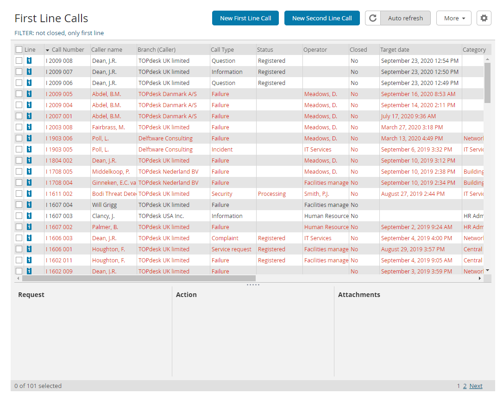

Alternating Rows for Overviews
Change the background of every other row to help identify rows using the Stylus browser extension, to improve your reading experience. Stylus is a userstyles editor and manager. It injects a CSS design into webpages in order to override the present design of TOPdesk. The Stylus extension is available for Chrome and Firefox.
To enjoy alternating colors in TOPdesk overviews: install Stylus.
Installation and settings
- Install Stylus for Chrome, or Stylus for Firefox.
- Open this link in a new tab: "Install directly with Stylus" or use the link badge depicted at the top of this page.
- Go to the newly opened tab and click the Install style button there.
To quickly enable or disable the style:
- Make sure that you have an overview open.
- In the browser menu bar, click on the Stylus plugin icon.
- Tick or untick the style iframe: TOPdesk alternating rows.
Configure the colours
You can finetune the style to suit your specific needs.
- Make sure that you have an overview open.
- In the browser menu bar, click the plugin icon.
- Click the gear icon in the "iframe: TOPdesk alternating rows" entry. The style configuration opens.
- You can now personalize the background color for even and odd rows.